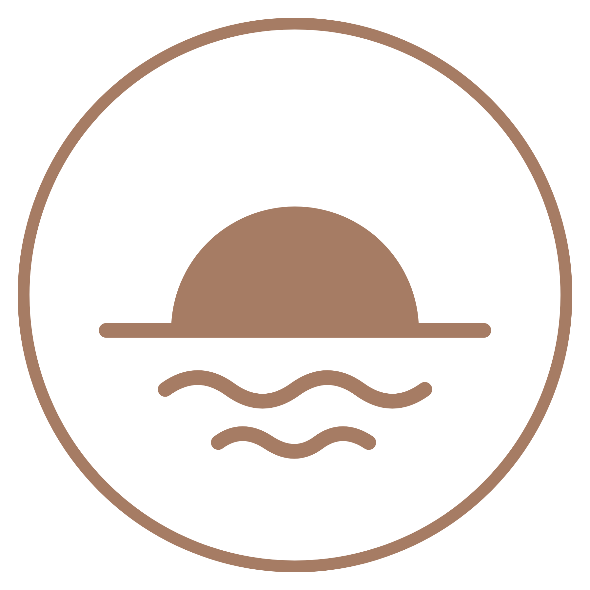
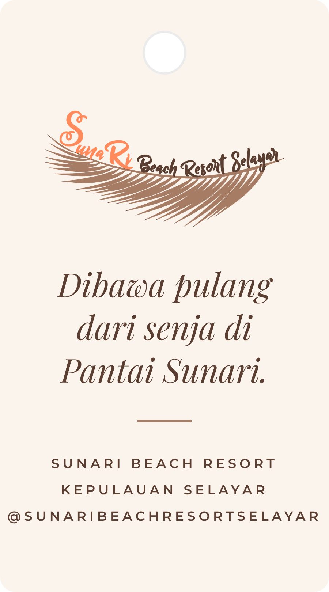

K01

K02
Kaos Cokelat Tua · Badge
Kaos
K03

Kaos Putih · Greetings
Kaos
K04

K05

T01
T02
B01
Mug Enamel (Camping)
Drinkware
D02
Tumbler Stainless
Drinkware
D03
Sarung Pantai / Bandana
Tekstil
X02
Gantungan Kunci Akrilik
Aksesoris
A01

SunaRi
Gantungan Kunci Kayu
Aksesoris
A02

PANTAI SUNARI · SELAYAR
Pin Enamel + Kartu
Aksesoris
A03


Tatakan Gelas (set 2)
Aksesoris
A05
Buku Catatan A5
Alat tulis
S01
Set Kartu Pos (3)
Alat tulis
S02
TEMPAT SENJA PULANG
Paper Bag Oleh-oleh
Kemasan
P01


P02